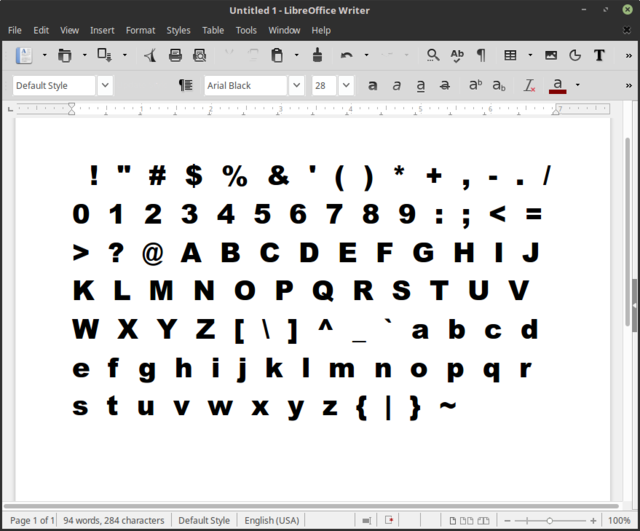
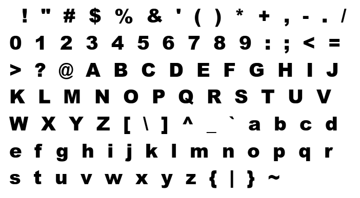

Text Demo
get ASCII characters
Python:
for i in range(32,127):
print(chr(i), end='')
>>>
!"#$%&'()*+,-./0123456789:;<=>?@ABCDEFGHIJKLMNOPQRSTUVWXYZ[\]^_`abcdefghijklmnopqrstuvwxyz{|}~
Enter ASCII into LibreOffice Writer with Arial Black font

screenshot text and create PNG

convert PNG to SVG with Inkscape
the hollow effect was a happy accident using 'Edge Detection' in Inkscape's
'Trace Bitmap' tool and I'm keeping it.
Convert SVG to fonts
I then used FontForge to turn it into a font.
Arial-Black-Hollow in FontForge format